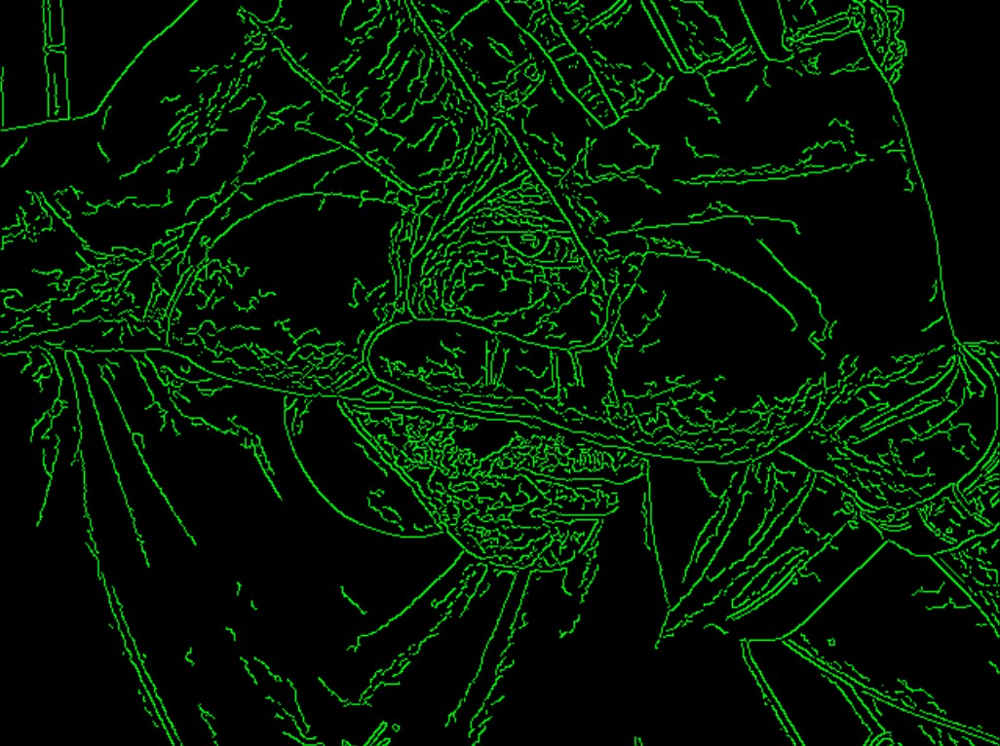

about the site
WabsWorld is a personal web log, project archive, and creative notebook.
This is where I collect projects, photos, notes, ideas, experiments, and the parts of my creative process that do not fit cleanly anywhere else.
Websites, visuals, writing, photography, food-related projects, and strange digital scraps that help me figure out what I want to keep making.